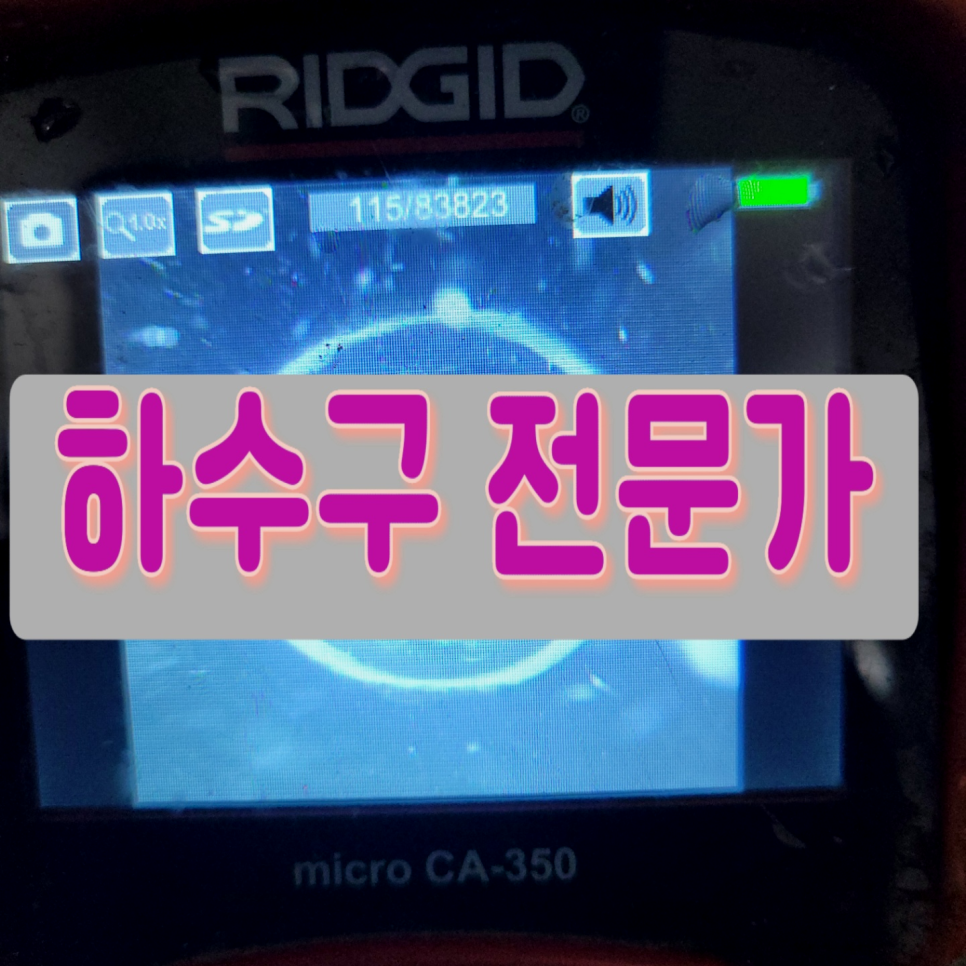
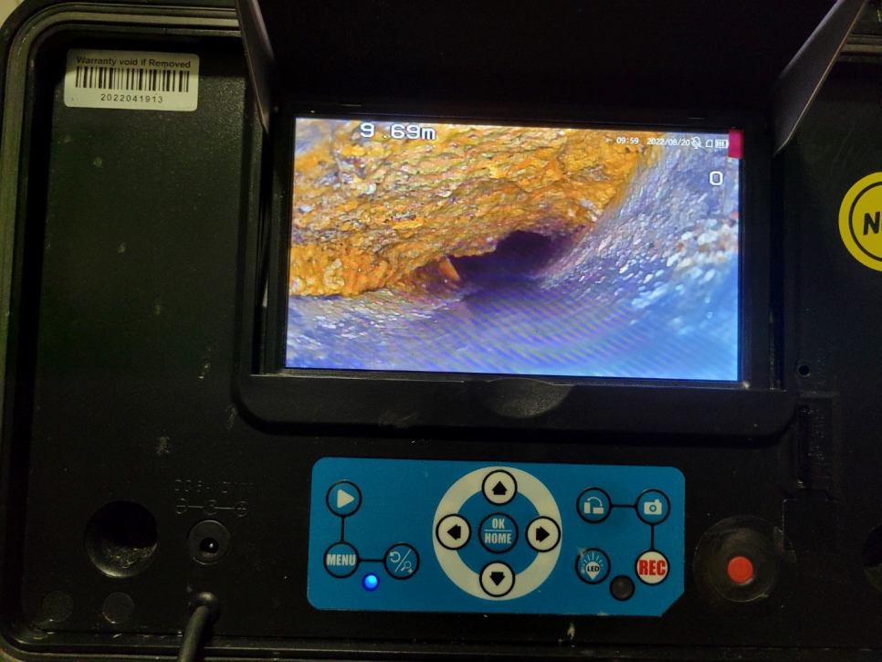
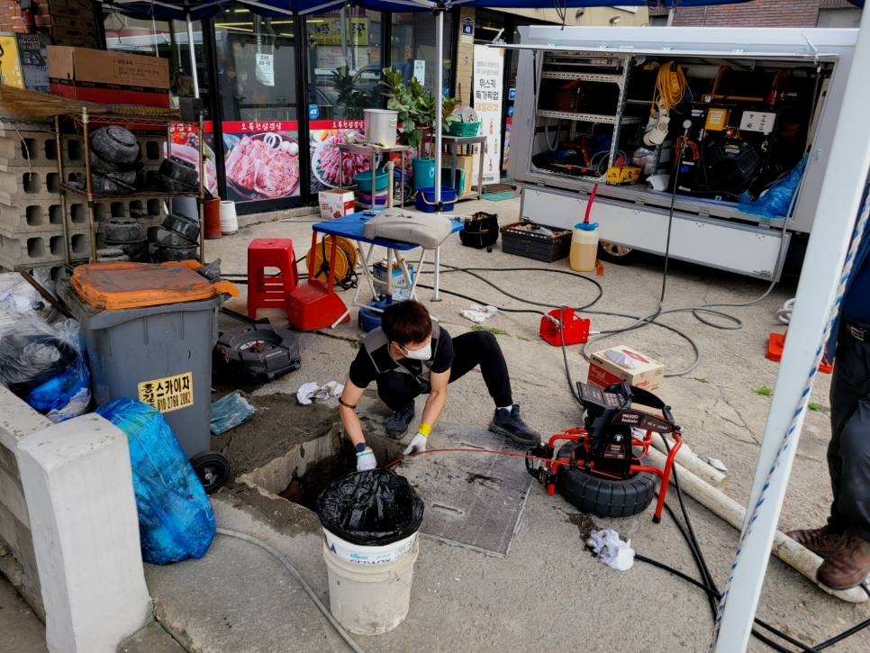
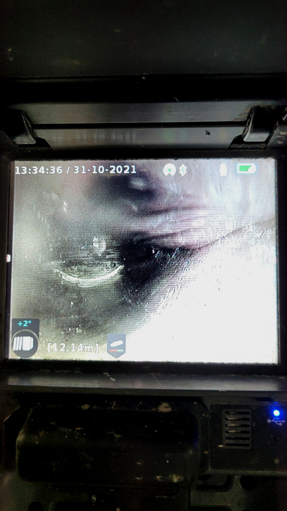
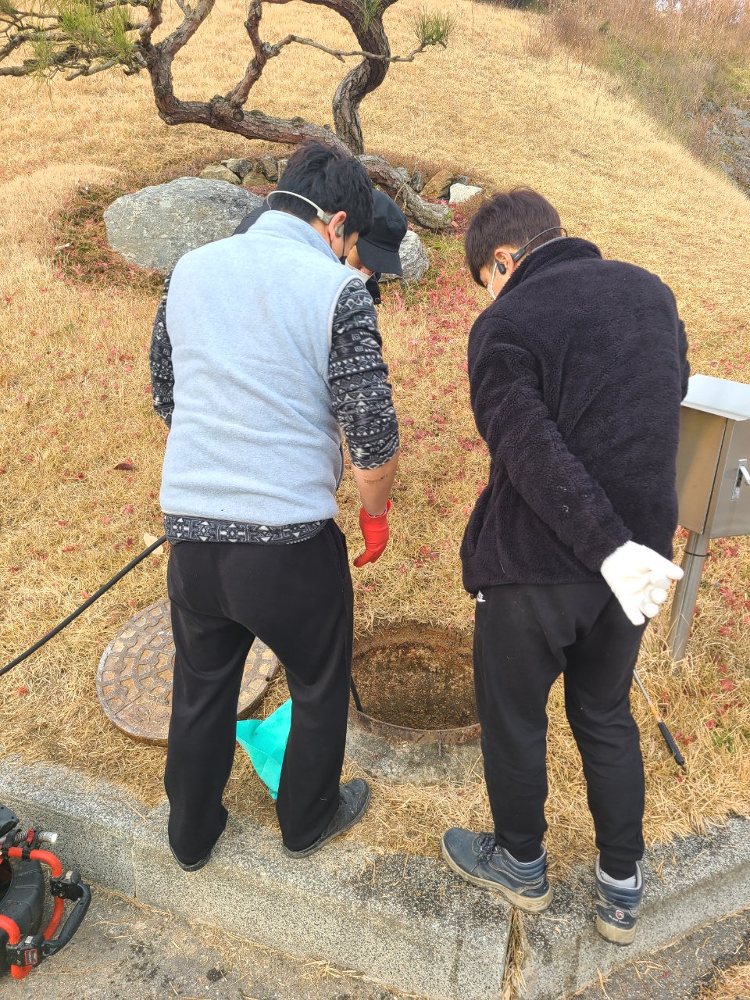
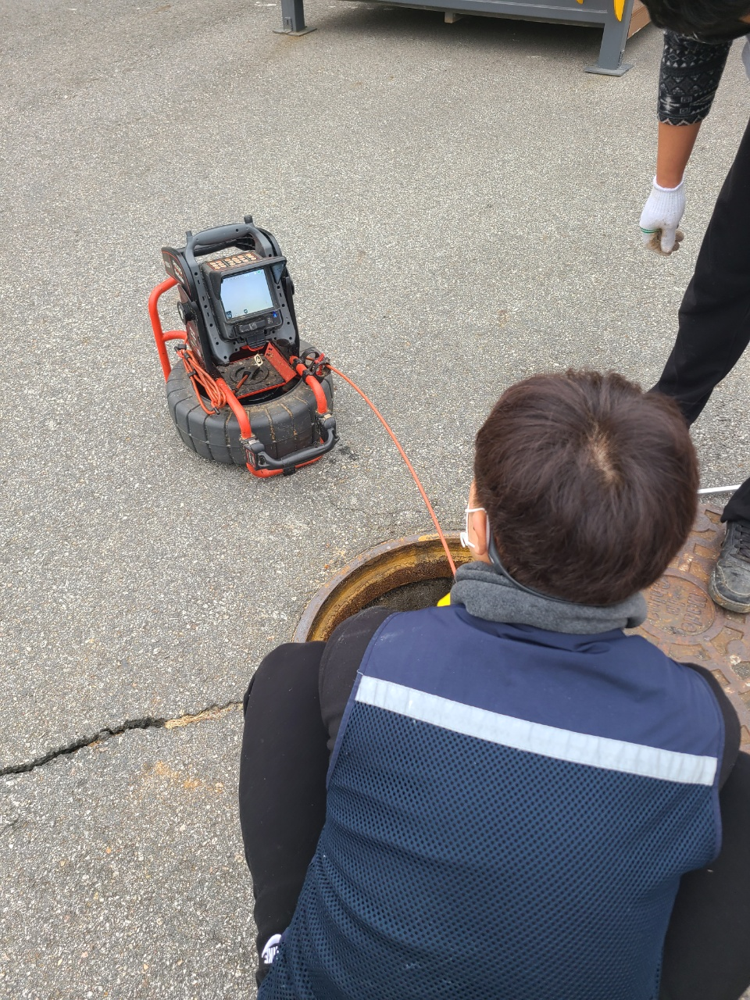
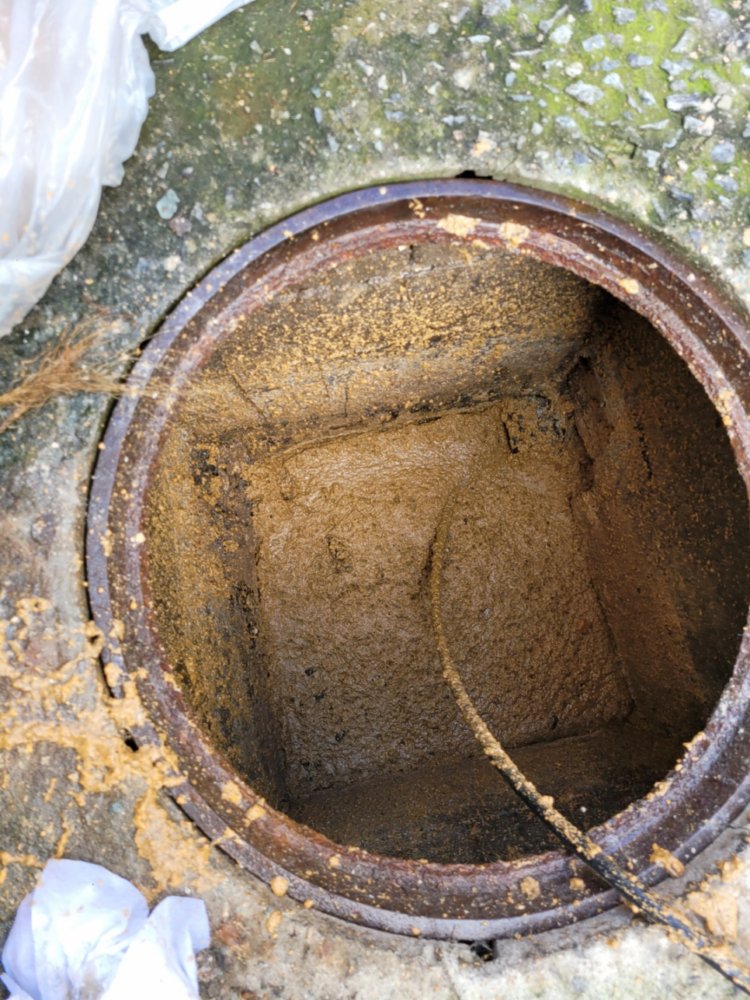

🏠 평택 서탄 공장화장실하수구역류 맨홀 역류넘침 하수구뚫기
평택 싱크대막힘 전문 시공 후기

📋 작업 개요
- 위치: 평택
- 서비스 유형: 싱크대막힘, 변기막힘, 하수구막힘, 배관막힘, 맨홀막힘, 역류해결, 뚫는업체, 배관청소, 설비공사
- 작업 일시: 2023. 10. 3. 1:18
- 업체명: 하수구수사대 (010-5615-2118)
🔍 문제 상황
안녕하세요.
설비전문업체 "하수구수사대"를 찾아주셔서 감사합니다.
물을 사용하는 장소라면 퇴수가 설치되어 있는 모습을 확인할수 있을 것입니다. 퇴수는 사용한 물이 흘러나가는 공간으로 다양한 배관으로 연결됩니다.
전문업체에 연락하는 건 좀 부담스러운터라 혼자 최대한 해결해 보고자 퇴수구뚫음을 시도해 보게 되죠.
평택 서탄 공장화장실하수구역류 맨홀 역류넘침 하수구뚫기
퇴수 문의하는 입장이라면 맡기는 사람이 출중한 실력을 갖추고 뒤끝없이 해결하시기를 바라실 텐데 그게 아니라면 골치 아픈 것이 사실입니다. 실제로도 믿고 맡겼다가 피해를 입으신 사연이 많은 것을 볼때 상상보다 흔한 일이라는 것을 유추가 가능합니다.

🔎 원인 분석
💡 전문가 진단: 평택 서탄 공장화장실하수구역류 맨홀 역류넘침 하수구뚫기
뚫고 난 후에는 벌레 꼬임과 냄새까지 해결이 되는데 무리하게 퇴수구를 건드렸을 경우 공사를 해야 할상황도 생기니 배관 케어를 할 수 있는업체에 맡기시는 것이 바람직합니다.어디로 해야 할지 고민될 때 실력부터견적 등등 살펴보셔야 할 것들이 있습니다.
또 약품을 잘못사용하면 막힌 퇴수 상황을 더 악화시키고 많이 쓰게되면 배관이 더 안좋아서 배관교체를 해야할수도 있으니 쓰시려 할때는주의해야 합니다.
하지만 실력이 아무리 좋다고 해도 장비가 없다면 또한 무슨 소용이 있을까 싶습니다. 앞서 말씀드렸듯이 사람의 육안으로 보는 데에는 한계가 분명히 존재하기 때문에 배출구내시경 장비가 없다면 정확한 진단이 어렵습니다.
전문 업체에서만이 퇴수구내시경 장비를 통해서 해결이 가능한 것이기에 배관 막힘이 발생을 하게 되면 반드시 전문 업체를 통해서 해결을 하시는 것이 좋습니다. 퇴수구배관 내시경을 통해서 내부를 확인을 하니 이물질 덩어리들뿐만 아니라 흙덩어리들이 내부로 들어가서 배관을 막고 있는 것이 보였습니다.
배수구막힘에는 락스나 뚫어뻥을 사용하더라도 효과가 없습니다. 외부의 이물질들로 인해서 배수구막힘이 발생을 하게 되면 물이 빠질 데가 없다 보니 이물질들을 빼내야 하는 만큼 이를 빠져나오게 되면서 역류를 하고 새게 되는 경우가 많이 있습니다.
배관이 배출수가 막혔을 때 올바르지 않은 방법으로 해결하면 건물 내 다른 공간에도 문제를 일으킬 수 있어서 주의가 필요합니다. 건물 내 배출수을 확인하고 싱크대 하수구 냄새의 원인인 위치를 파악했습니다. 일차로는 맨눈으로 확인하고 정밀 점검을 하고 문제 해결을 위해 장비를 사용했습니다.

🔧 작업 과정
사진으로 보시는 것처럼 배관으로 내시경을 넣어 확인해 보았더니 싱크대볼이 문제가 아니라 배출구에 기름 스케일이 쌓여서 슬러지가 생기는 바람에 물흐름을 방해하고 있었습니다.
고치시다가 해결할수없어서 어쩔수없이 배수배관업체를 알아보시는분들이 많이있어요 문의하실때에 자세하게 체크해보셔야 별문제없이 해결할수있어요 정직한업체들을 위주로 찾아보고있으신데 여유가없는 상황이라면 저희에게 연락주시는걸 추천해요
이것만으로 끝나는게아닌 방치했을때는 다른세대에 안좋은영향을 주기때문에 유의하셔야하는데요. 하수막힘 의뢰자분만 고치신다면 상관없겠지만 이와같은것이 생기게되면 타격주신것을 변상해야되기에 큰피해를입으실텐데요.
연락하신곳이 결점이있다면 배출구 뚫지도않고 손을놔버리거나 재발의가능성이있는채로 돌아가게됩니다. 선택하셔야할때 견적가도 확인해야하는데요.대부분의의뢰자는 비교적싼곳에 마음이가실겁니다.
이와같을때제일 중요한것이 공휴일에도 해결하는 전문설비회사일텐데요.저희배수구업체는위와 같은때를 사전에막고자 일년동안 항상근무하고있어요.도움이필요하신다면 언제든지의뢰가 가능하도록 낮밤상관없이 의뢰받고있습니다.
그런데상황이 악화되었을때는 셀프로뚫으시는건 사고가날수있습니다.간단하게 사는 저렴한 하수 청소기들을 무작정넣게되면 뚫리지않고 안쪽에있는게 서로덩어리져서 심화되게됩니다.
변기 쪽에 물을 내려보니 좌변기 및 소변기는 물이 시원하게 내려가고 있는 상태였고, 단순히 바닥 하수 배관 쪽만 막힌 느낌이었지만 일단 상황을 살펴보아야 하는 상태였습니다.
작업 후 퇴수구배관이 빈 것을 보면서 확인이 가능하지만 물이 잘 내려가는지 확인을 위해 통수를 해서 잘 빠지는지, 역류나 물이 차오르지는 않는지 이중 삼중의 확인이 필요합니다.
원인이 된 사고를 수습하지 않으면 후속 차량이 지속적으로 정체되는 현상을 해결할 수 없습니다. 사고 차량이든 도로를 막아버린 낙석이든 정체를 초래한 요인을 제거하면 흐름은 자동으로 복구됩니다.


✅ 작업 완료
이렇게 돼 버린다면 아까운 돈만 배로 들어가게 되어 더욱 골치가 아파지실 텐데요 이런 비슷한 사례를 사전에 막기 위해서는 확인하셔야 할 사항들이 한두 가지가 아닙니다. AS 서비스도 중요합니다.
싱크대, 변기, 세면대 등등 배수가 필요한 모든 공간이라면 어디든지 출동하여 신속하게 문제를 해결해 드리고 있으므로 실력 있는 전문 업체를 찾고 계시다면 문의하시기 바랍니다.
#하수구막힘 #하수구뚫음 #하수구역류 #씽크대막힘 #싱크대역류 #오수관막힘 #하수구청소 #욕실하수구막힘 #변기막힘 #하수구뚫는비용 #싱크대수리 #화장실막힘




⚠️ 주방 싱크대 배관 막힘 예방 수칙
- ✅ 기름기가 묻은 식기나 프라이팬은 설거지 전 키친타올로 반드시 기름때를 닦아내세요.
- ✅ 주기적으로 싱크대 개수대에 뜨거운 물을 가득 받아 한 번에 내려 배관 내부 기름을 씻어내세요.
- ✅ 배수구 거름망을 미세한 필터로 사용하시고 음식물 찌꺼기가 틈으로 새어 들지 않게 관리하세요.
- ✅ 베이킹소다와 식초를 뜨거운 물과 함께 일주일에 한 번씩 부어주면 배관 살균과 막힘 예방에 좋습니다.
💡 핵심 정리
- 확실한 장비 작업(내시경 점검 및 샤프트 스케일링)으로 원인을 뿌리 뽑습니다.
- 작업 후 1년 이내에 동일한 부위 재발 시 100% 무상 A/S 서비스를 보장합니다.
- 서울 · 경기 · 인천 전 지역에 24시간 언제든 긴급 출동할 수 있도록 항시 대기 중입니다.
❓ 자주 묻는 질문 (FAQ)
🚨 평택 싱크대막힘 문제로 고민이신가요?
정확한 원인 진단과 확실한 시공으로 재발 없는 해결을 약속드립니다.
24시간 긴급 출동 | 서울 · 경기 · 인천 전지역 | 1년 내 재발 시 무상 A/S